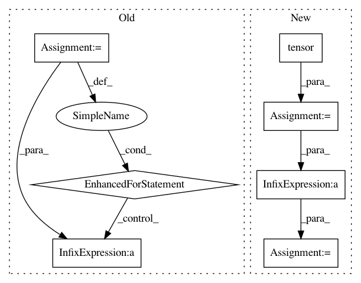

cf8a3fb30547d6e980ecd8182f64a51df8e55c62,python/dgl/backend/pytorch/tensor.py,,pack_padded_tensor,#Any#Any#,248
Before Change
batch_size, max_len = input.shape[:2]
device = input.device
index = []
for i, l in enumerate(lengths):
index.extend(range(i * max_len, i * max_len + l))
index = th.tensor(index).to(device)
return gather_row(input.view(batch_size * max_len, -1), index)
def boolean_mask(input, mask):
After Change
max_len = input.shape[1]
device = input.device
if not is_tensor(lengths):
lengths = th.tensor(lengths, dtype=th.int64, device=device)
else:
lengths = lengths.to(device)
input = input.view(-1, *input.shape[2:])
out_len = lengths.sum().item()
index = th.ones(out_len, dtype=th.int64, device=device)
cum_lengths = th.cumsum(lengths, 0)
index[cum_lengths[:-1]] += (max_len - lengths[:-1])
index = th.cumsum(index, 0) - 1
return input[index]
def boolean_mask(input, mask):
In pattern: SUPERPATTERN
Frequency: 3
Non-data size: 7
Instances
Project Name: dmlc/dgl
Commit Name: cf8a3fb30547d6e980ecd8182f64a51df8e55c62
Time: 2021-02-10
Author: expye@outlook.com
File Name: python/dgl/backend/pytorch/tensor.py
Class Name:
Method Name: pack_padded_tensor
Project Name: dmlc/dgl
Commit Name: cf8a3fb30547d6e980ecd8182f64a51df8e55c62
Time: 2021-02-10
Author: expye@outlook.com
File Name: python/dgl/backend/pytorch/tensor.py
Class Name:
Method Name: pad_packed_tensor
Project Name: OpenMined/PySyft
Commit Name: 59d4bbaaf06850e2dfb357855f50b05f6c9aadb1
Time: 2020-10-02
Author: skywind29@users.noreply.github.com
File Name: syft/frameworks/torch/fl/utils.py
Class Name:
Method Name: scale_model